Charades · Easy · page 2/11 · all packs
Reject an image by adding its slug to public/charades/charades-easy/reject.txt (append ! to keep it word-only), then re-run node scripts/genimages.mjs.
1 2 3 4 5 6 7 8 9 10 11 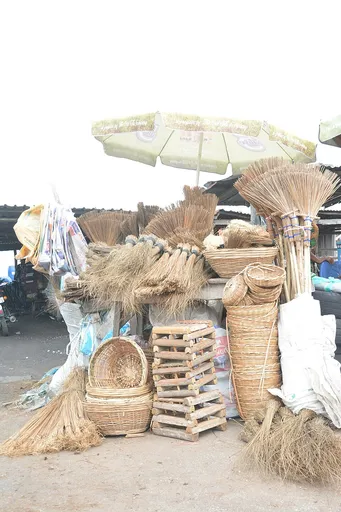
Broom broomCC BY-SA 4.0 · Photogbeleyi · source 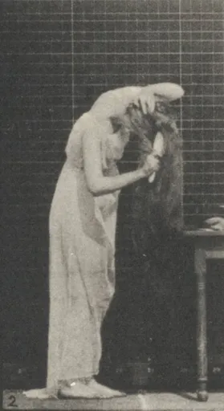
Brushing hair brushing-hairPublic domain · Muybridge, Eadweard, 1830-1904 · source 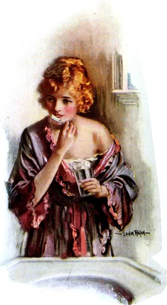
Brushing teeth brushing-teethPublic domain · Lester Ralph · source 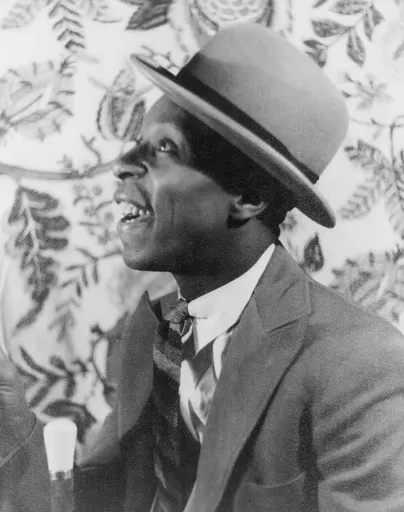
Bubbles bubblesPublic domain · unknown · source 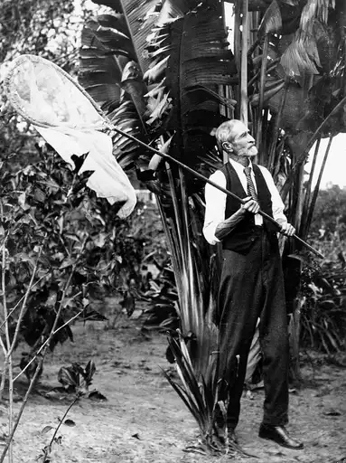
Butterfly net butterfly-netPublic domain · Unknown authorUnknown author · source 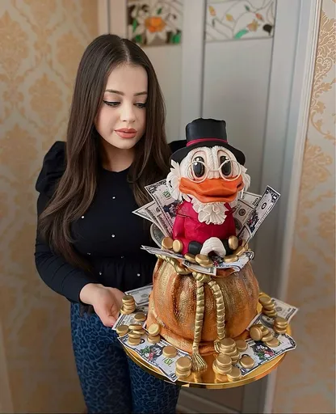
Cake cakeCC BY-SA 4.0 · VanssculptCakes · source Camera cameraCC BY-SA 4.0 · Neuroforever · source 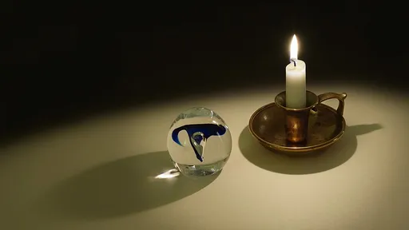
Candle candleCC BY-SA 4.0 · W.carter · source 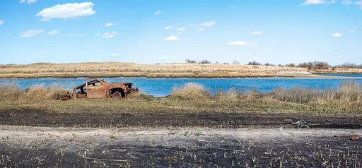
Car carCC BY-SA 4.0 · Rhododendrites · source 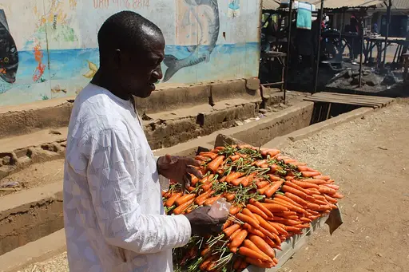
Carrot carrotCC BY-SA 4.0 · Friday musa · source 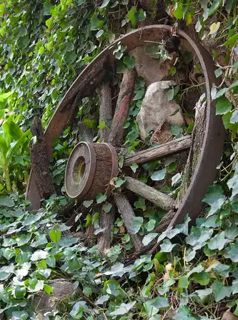
Cartwheel cartwheelCC BY-SA 4.0 · Carlos Valenzuela · source 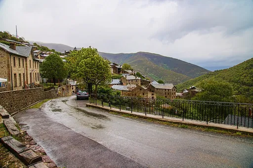
Cat catCC0 · MEIER alain albert · source Clapping clappingCC BY-SA 4.0 · Zakharov Oleg · source 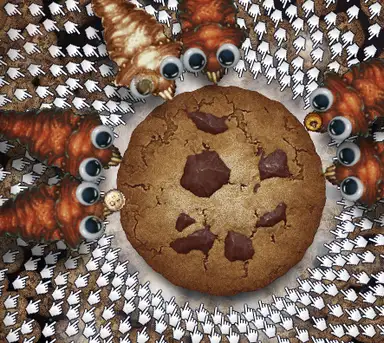
Cookie cookieCC BY 4.0 · Imagehelper83738 · source 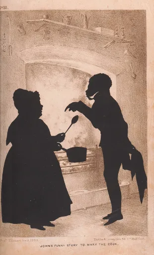
Cooking cookingCC0 · Auguste Edouart · source 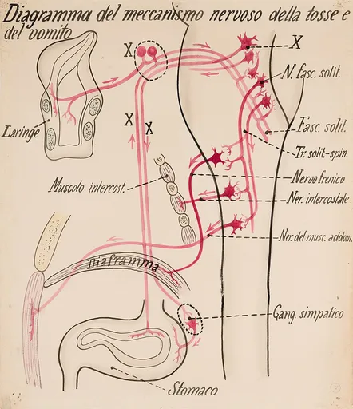
Coughing coughingPublic domain · Unknown authorUnknown author · source Crown crownCC BY-SA 4.0 · Bhullargraphic · source 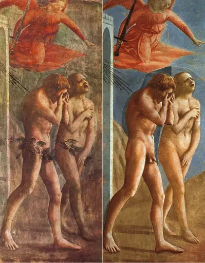
Crying cryingPublic domain · Masaccio · source 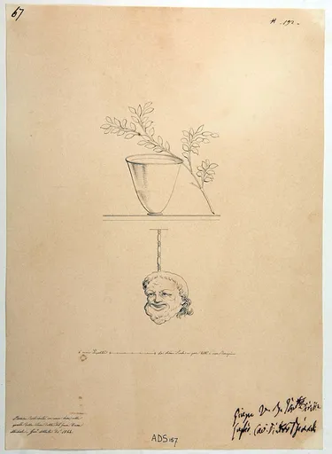
Cup cupPublic domain · originals by unknown 1st century Roman artists · source Dancing dancingCC BY-SA 4.0 · Jaypro events · source 1 2 3 4 5 6 7 8 9 10 11